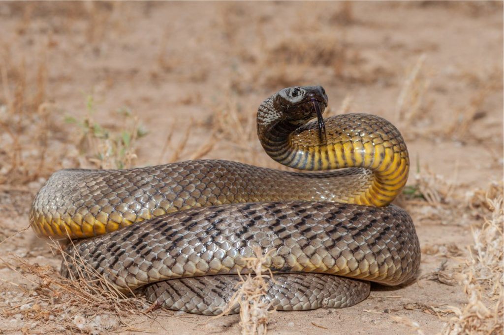

Oxyuranus microlepidotus (Fierce Snake)
The Oxyuranus microlepidotus, commonly known as the fierce snake or inland taipan, is recognized as the most venomous snake in the world. Native to semi-arid regions of Australia, this snake can grow up to 8 feet long. Despite its potent venom, the fierce snake is rarely encountered by humans.
- Habitat: Semi-arid regions of central Australia
- Length: Can grow Up to 8 feet
- Venom: Most toxic of any snake species
- Behavior: Shy and non-aggressive but will bite if provoked
The fierce snake’s venom is extremely potent, but it is not considered dangerous to humans due to its timid nature and remote habitat. It primarily feeds on small mammals and is an important part of its ecosystem.